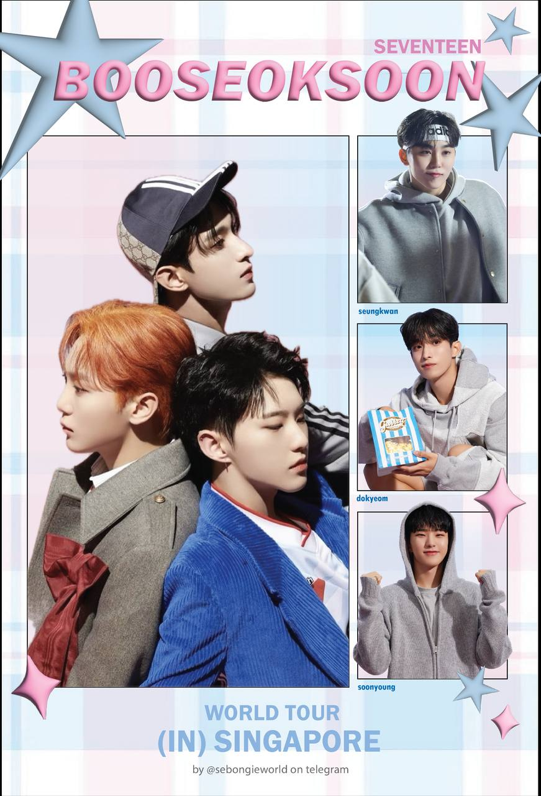

The left photo showcases a commissioned piece I created for my friend, who trusted me to bring her vision to life—a responsibility I took on with pride and care. The right photo features a design I created to distribute at a concert, marking my first experience working with a supplier to bring my ideas to reality. Both projects were significant milestones for me: the commission strengthened my confidence in creating personalized work for others, while the concert project taught me how to navigate the production process and turn a concept into a tangible product.
Tool(s) used: Illustrator and IbisPaint